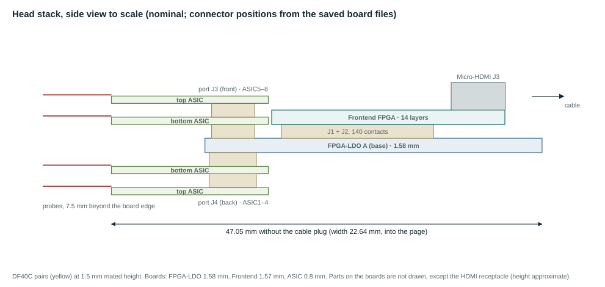
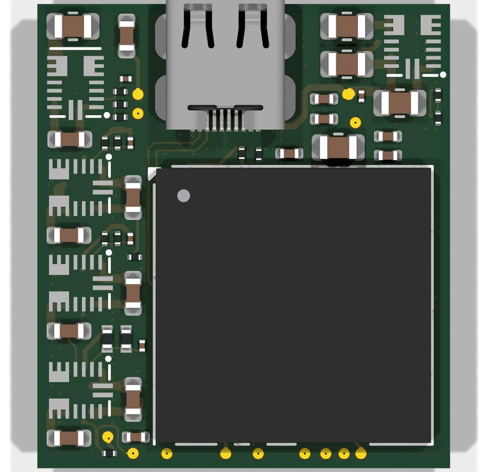
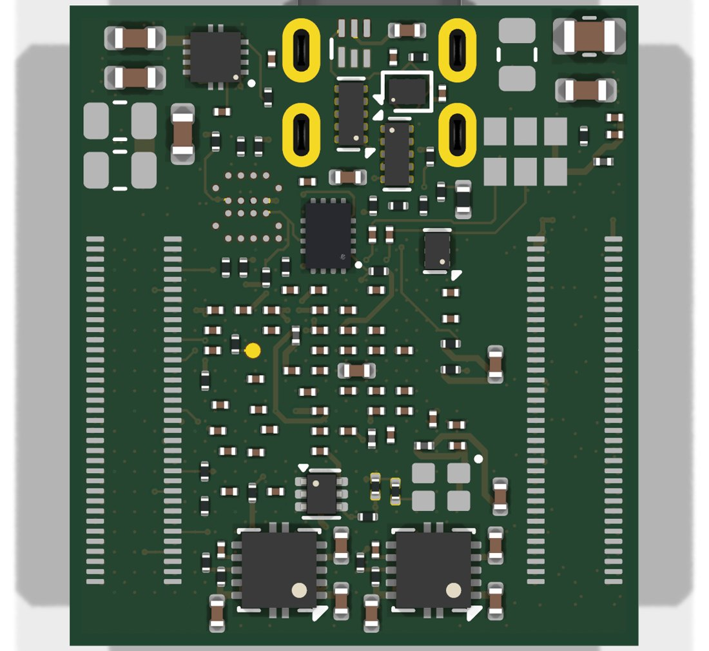
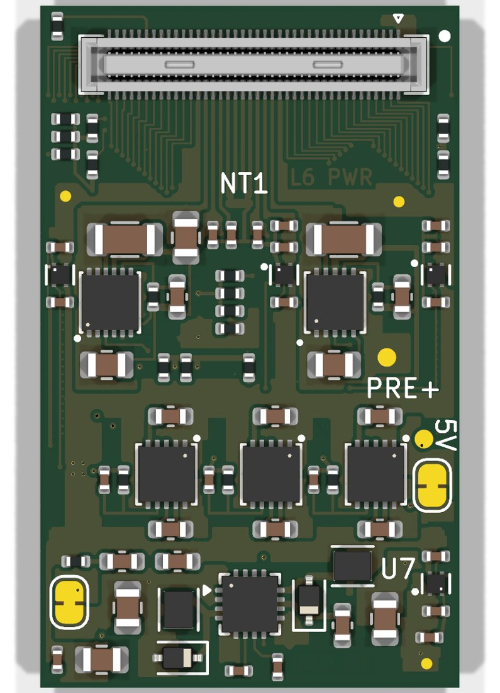
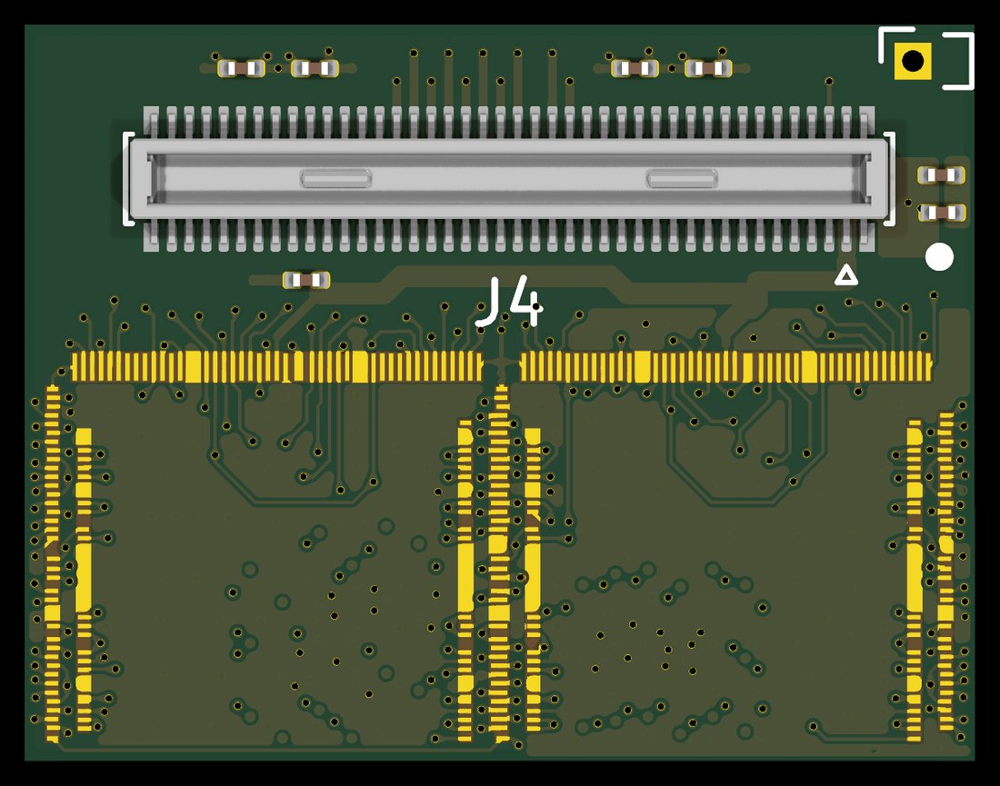
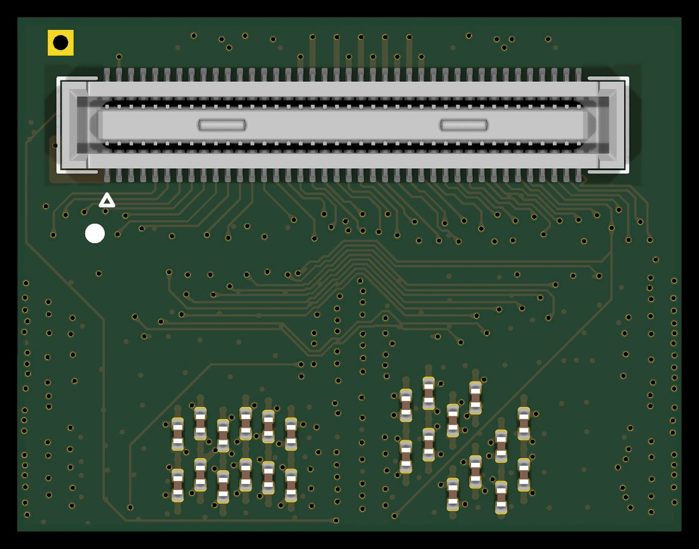

Datasheet · Section 6 · Draft V1
6Mechanical
In short. A head is a stack about 23 × 47 × 14 mm. The FPGA-LDO board is the base: the Frontend plugs onto its front, and the two ASIC ports sit at one end, one on each face. The cable plugs into the Frontend at the other end.
| Board | Size | Thickness | Copper layers | Maker |
|---|---|---|---|---|
| HDMI Extension Board | 167.65 × 114.10 mm, PC-card edge | 1.59 mm | 6 | JLCPCB |
| Frontend | 22.59 × 25.42 mm | 1.57 mm | 14 (fine-pitch, HDI) | JLCPCB |
| FPGA-LDO A | 22.64 × 36.76 mm | 1.58 mm | 6 (fine-pitch, HDI) | JLCPCB |
| ASIC board (bottom, top) | 22.37 × 17.03 mm | 0.8 mm | 10 | PCBWay, ENEPIG finish |
HDI (high-density interconnect) boards use very small holes to fit dense chips. ENEPIG is a gold-over-palladium surface finish needed for wire bonding the bare ASIC chips.
Head stack: 22.64 × 47.05 × 13.71 mm without the cable plug, or 22.64 × 78.64 × 15.04 mm with a typical plug (nominal, from the 13 Nov 2026 printable models). Every board-to-board joint is a Hirose DF40C connector pair, which holds the boards 1.5 mm apart. The FPGA-LDO board is the base: the Frontend and one ASIC port are on its front, and the other ASIC port is on its back at the same position.



Frontend, top: FPGA, Micro-HDMI socket J3
Frontend, back: J1/J2 to the FPGA-LDO board FPGA-LDO A, front: J1/J2, ASIC port J3
FPGA-LDO A, front: J1/J2, ASIC port J3
FPGA-LDO A, back: ASIC port J4, regulators
ASIC bottom board, chip side
ASIC bottom board, back- The connectors have no key. An ASIC board can be plugged in turned 180°. That would put the ±8 V supplies onto ASIC outputs and leave the board without ground. Pin-1 marks are printed next to every connector, and since V15 each ASIC board is printed with TOP or BOTTOM on both faces; a mechanical key is still missing.
- Heat: see section 6.1.
- ASIC boards at the fabricator: PCBWay makes these boards, with the ENEPIG finish. Since V14 the files keep to the limits PCBWay publishes; PCBWay has not yet checked the files itself (AB-05).
- HDMI Extension Board enclosure: the XEM8310's heat sink does not fit the planned enclosure; measure the module's temperature in the closed box (HDMI-41).
- Test-frame tabs: the Frontend and the FPGA-LDO board are held in their test frames by small tabs with a row of holes. Free each board the way its frame says in print, and file the stubs flush (section B5).
- Housing and retention: set aside for now.
6.1Heat and mass (first estimates)
All the power a head uses ends up as heat in the head: about 1.2 W typically, up to about 2.5 W at worst. Most of it comes from the Frontend FPGA and its regulators; the eight ASICs make only about 0.08 W. Treating the head as a block with about 40 cm2 of surface, its surface would warm above the surrounding air by about:
| Head power | still air | light air flow |
|---|---|---|
| 1.2 W (typical) | about +29 °C | about +14 °C |
| 2.5 W (worst case) | about +62 °C | about +31 °C |
This is a rough first estimate. It ignores heat flowing into the cable or the animal and any hot spots. Some heat reaches the ASIC boards and probes through the connectors. The bare boards weigh about 6.5 g, so a complete head is likely 8–10 g. Measure temperature and weight on the first assembled head.
Design details heat estimate method
Surface rise = P / (h A) with A ≈ 40 cm2; still air h ≈ 10 W/m2K, light air flow h ≈ 20 W/m2K.
6.2Grounding with several heads (suggestion)
“Ground” is the 0 V reference that all signals are measured against. With several heads on one animal, ground must connect in one place only; otherwise currents can loop between heads and add mains hum (50/60 Hz noise) to the recordings. Each head's ground already returns through its cable to the HDMI Extension Board, and from there to the PC and the 12 V adapter. Suggested practice:
- Use one ground electrode in the animal for the whole system (one skull screw or wire). It is also the return path for stimulation current.
- Run one short wire from each head to that electrode, all meeting at one point. Do not chain heads together, and do not add a second connection to the animal.
- On each head, connect the wire to analog ground: test point TP6 on the FPGA-LDO board. The ±8 V stimulation supply is referenced to it (to be confirmed with the ASIC designer).
- Use each probe's reference site (REF) only as the recording reference.
- Connect the Faraday cage (the metal screen around the setup) to the HDMI Extension Board's ground at one point (a DGND hole of J920).
- Use a double-insulated (two-pin) 12 V adapter. If you record over USB, use a battery-powered laptop or a USB isolator.
- With one head powered, measure leakage to mains earth and the 50/60 Hz noise; then add heads one at a time.